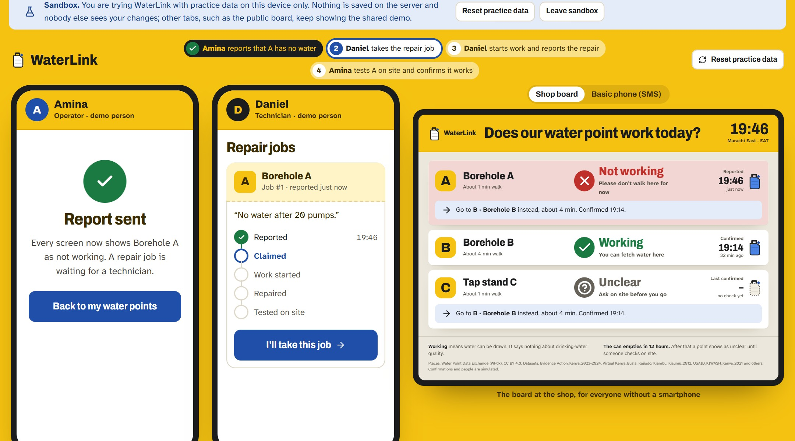
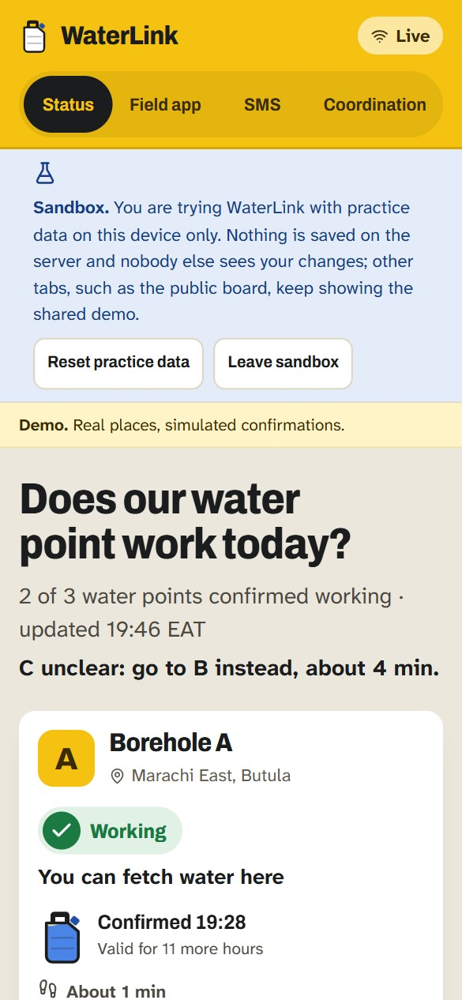

Does our water point work today?
WaterLink shows the last confirmed state of every water point before people walk, and makes every outage a job with a named person that only counts as repaired once the pump was tested on site.

